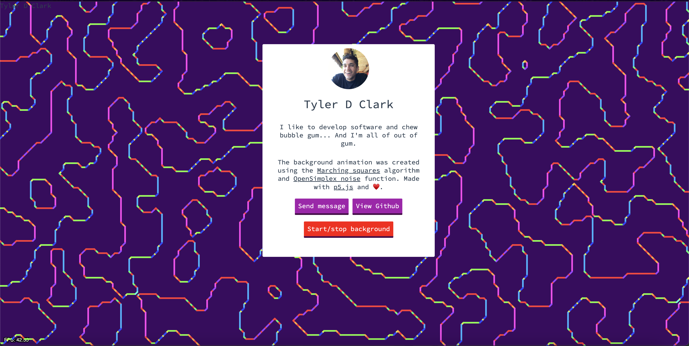
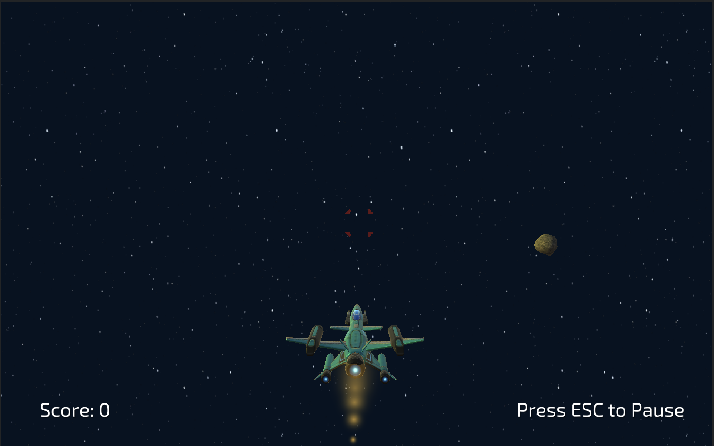
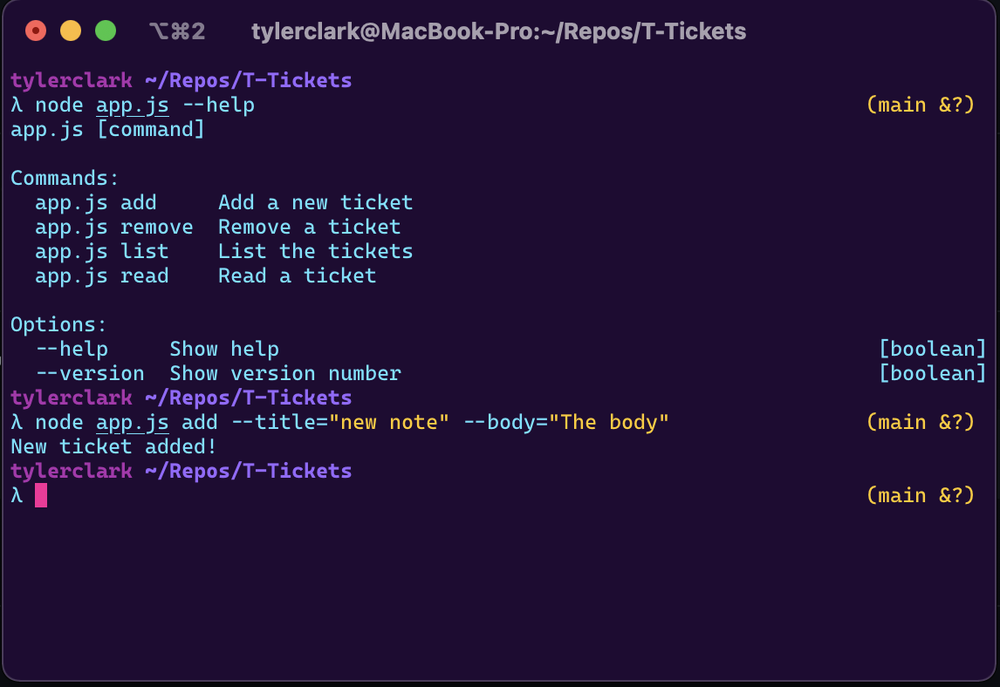
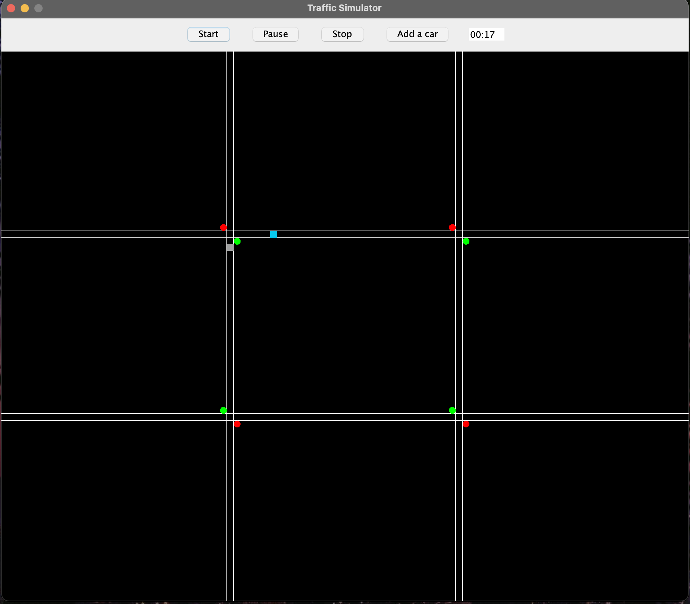

Tylerdclark.devA personal website made with HTML, CSS, and JavaScript. For this project, I used the p5.js library for the background animation loop. The animation was created using the Marching squares algorithm and OpenSimplex noise function |

3d-asteroidsA 3D asteroid game made with Unity3D and C#. You are a ship in space and are shooting/avoiding asteroids. One hit and you're a goner! The game makes use of ray-tracing, game objects, and coroutines. |

T-TicketsCommand Line Interface (CLI) application that allows the user to create and track tickets. made with JavaScript (Node.js) and uses JSON to store the tickets. |

Traffic SimulatorA traffic simulation application made with Java Swing. This application uses a grid of cells to simulate traffic. The traffic lights, cars, and timer are made using SwingWorkers. SwingWorkers allow for the application to run in the background while the user can interact with the application. |